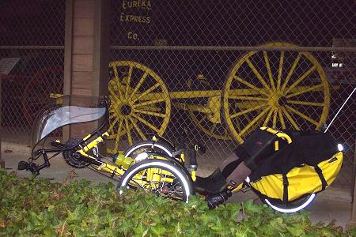
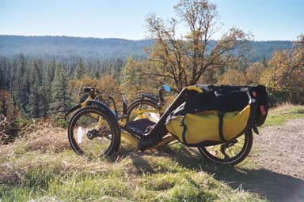
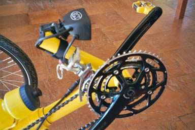

Catrike

The tricycle is fun to ride.
Riding this thing is a joy.
It seems effortless at times, yet, at the same time, exhilarating.
It is odd to be so mentally relaxed and to feel an adrenaline rush at
the same time. I suspect that it is a feeling you can only get on
a trike. The brain is not occupied with staying balanced, and is
free to wander.

On Coyote Street
I have been riding the tricycle
to work. The trike makes a nice commuter machine.
This style of tricycle, with two wheels in front and one in back, is
known as a 'tadpole'. I like its ability to carry large panniers,
and its low gearing. Thanks to the small, 18" wheels, it has good
low gears for hill-climbing.

Technical stuff
for hardcore bent riders and other geeks